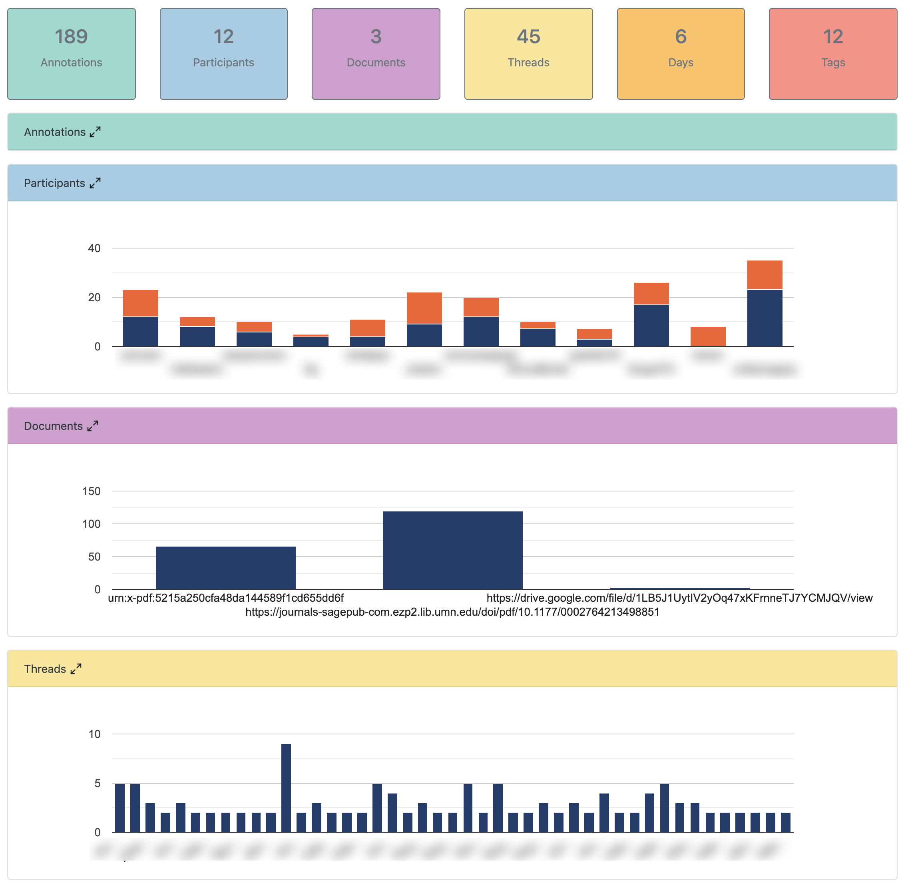

Week 3 Ethics, Algorithmic Accountability, and System Integrity
This week we will:
- Develop an understanding of ethics in the context of LA
- Develop an awareness of theories, tools, and approaches that promote system integrity of learning analytics
- Continue to explore course project ideas
Thanks for the engaged conversations in the first week of #LAUMN!
What is apparent to myself is that the breadth of expertise represented in our community is truly energizing. I hope we can continue to have deep conversations within and beyond this community, and to engage in learning that’s personally meaningful to everyone of us.
In the spirit of “living and exploring the capacity of learning analytics”, I encourage you to explore tools like CROWD LAAERS that we discussed during our Zoom meeting. After authenticating yourself using your Hypothes.is API token, you will be able to choose our group and have a bird-eye view of our annotation activities.
I found the Threads section quite useful for discovering threads with more (or less) participation. You can click on a particular thread to filter or “drill down” the data.

3.1 Ethics in Learning Analytics
Let’s be clear, ethics should not be an after-thought in a learning analytics application. (That’s why we are discussing ethics this week instead of in Week 14 of this semester.) But what do ethical practices in the field entail is not always clear.
While research ethics considers principles such as confidentiality, privacy, and informed consent, a learning analytics project may not be considered research at all (if its goal is not to produce generalizable knowledge).
However, extensive collection of learning data, increasing cases of “black-box algorithms,” and more direct impact on learners necessitate some serious conversations about ethics in learning analytics.

(Photo Credit: Wikipedia)
Last week’s discussions have already touched upon many questions about ethics. This week, we are going to dive into ethics, algorithmic accountability, and system integrity.
3.2 Week 3 Learning Activities
3.2.1 Read, annotate, and discuss
Please read:
- Prinsloo and Slade (2017) - link. (Note: It may be difficult to highlight larger text snippets in this particular PDF file.)
- Optional readings:
When reading each article, please annotate wherever you like. Let the community know when something confuses you, when you find an example that fits your interests, when you find a statement illuminating/useful, etc.
Please also reply to each other whenever you could. See Section 1.1.3 posted in Week 1 for details about the weekly timeline.
This week, I encourage you to be very intentional about tags you use in Hypothesis annotations.
Reminder: When annotating with Hypothes.is, please make sure the LAUMN-2020 group is selected. If you are not sure about annotating PDFs, please refer back to this video tutorial.
3.2.2 Meet Learning Analytics Experts
Paul Prinsloo from the University of South Africa (Unisa) has been writing and giving talks about ‘ethics and learning analytics’ for many years. He delivered a keynote on this topic in Scotland in 2018. He has graciously allowed me to embed his slides on our course website:
Simon Buckingham Shum, Director of the Connected Intelligence Centre (CIC) at the University of Technology Sydney, invited us to consider ‘Algorithmic Accountability’ and ‘Analytic System Integrity’. Discussion of Algorithmic Accountability has been taken up by important academic associations like the Association for Computing Machinery (ACM). But Simon stretches our thinking to consider ‘Analytic System Integrity’ in learning analytics. Below is a talk he gave at the UCL Institute of Education in 2016. His team is recently working on Ethical Design Critique, which offers concrete measures to enhance ethics in learning analytics tools. And he is delivering a Learning Informatics Webinar to a UMN audience on Sep 24! Don’t miss it.
3.2.3 “Living” with Learning Analytics
Last week, we introduced CROWD LAAERS designed for Hypothes.is.
This week, I encourage you to check out this data tool developed by a Hypothes.is engineer that helps you “see” Hypothes.is data. Again, you will need to use your Hypothes.is API token to access our private group annotations. Please try to play with the CSV and JSON formats to see what they look like.
Share your thoughts and findings on Slack!
3.2.4 Continuing to explore project ideas
Thanks for sharing your initial project ideas on Slack. As we read and discuss more, please take time to explore and refine ideas. The official deadline for sharing your project idea is 9/29.
Please consider problems/goals, stakeholders, data sources, analysis, and action of your project.
When you’re ready, please post your project idea in the projects channel. Continue to give each other’s ideas constructive comments!

3.3 Housekeeping
3.3.1 Start to Explore Special Interest Groups (SIGs)
Please start to consider which Special Interest Group(s) you’re interested in. Below is a list of tentative topics but you can suggest topics beyond the list. Ideally, the Special Interest Group you sign up for is related to your final project.
- Social Network Analysis
- Predictive Models
- Text and Discourse Analytics
- Visual Learning Analytics
- Temporal Analytics
- Multimodal Learning Analytics
- Collaboration Analytics
- Institutional Readiness
3.3.2 Future Weeks
No Zoom meetings in the next few weeks.
There will be a Slack chat on Tue, Sep 22 (details to be announced).
Questions? Reach out to Bodong via Slack or email.
References
Chen, Bodong, and Haiyi Zhu. 2019. “Towards Value-Sensitive Learning Analytics Design.” In Proceedings of the 9th International Conference on Learning Analytics & Knowledge, 343–52. ACM. https://doi.org/10.1145/3303772.3303798.
Kitto, Kirsty, and Simon Knight. 2019. “Practical Ethics for Building Learning Analytics.” British Journal of Educational Technology 50 (6): 2855–70. https://doi.org/10.1111/bjet.12868.
Prinsloo, Paul, and Sharon Slade. 2017. “Ethics and Learning Analytics: Charting the (Un)Charted.” In Handbook of Learning Analytics, edited by Charles Lang, George Siemens, Alyssa Wise, and Dragan Gasevic, First, 49–57. Society for Learning Analytics Research (SoLAR). https://doi.org/10.18608/hla17.004.